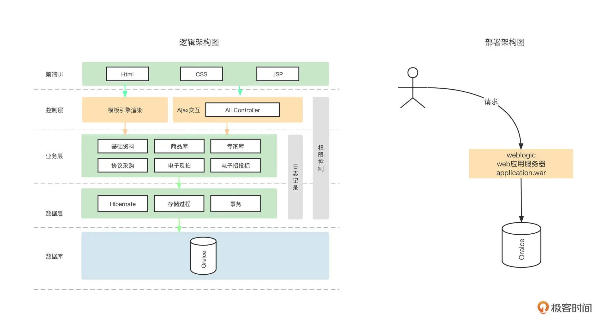
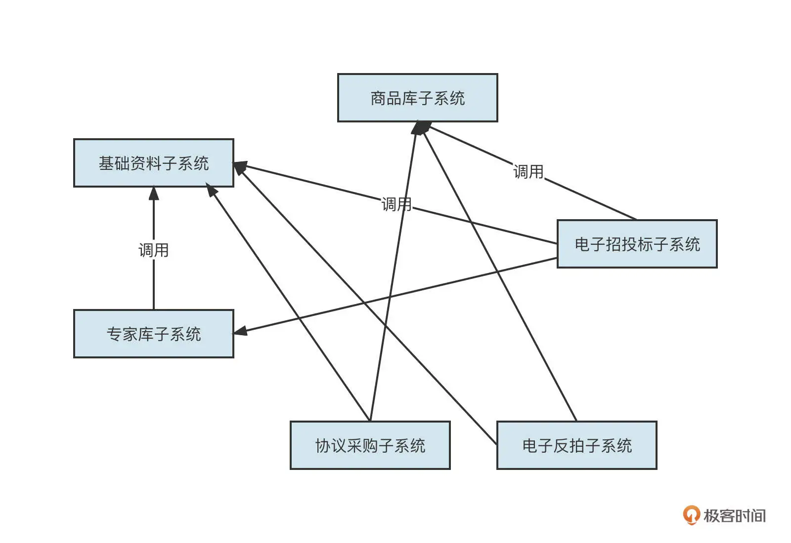
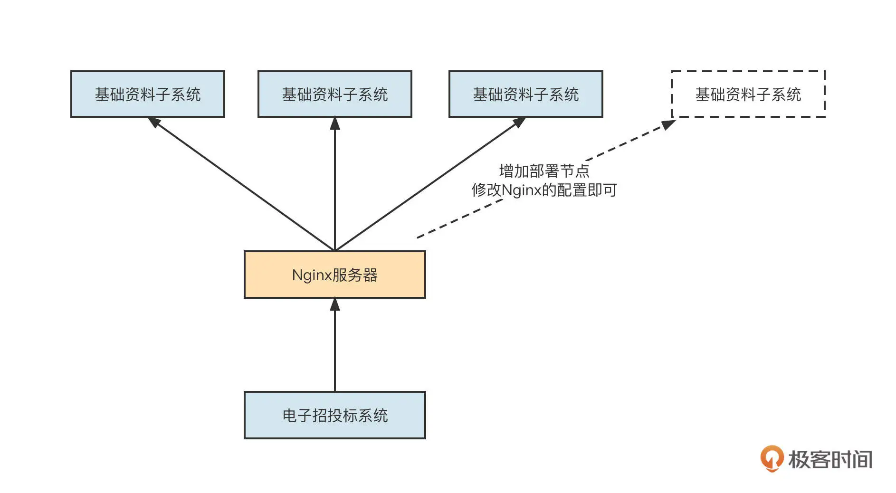
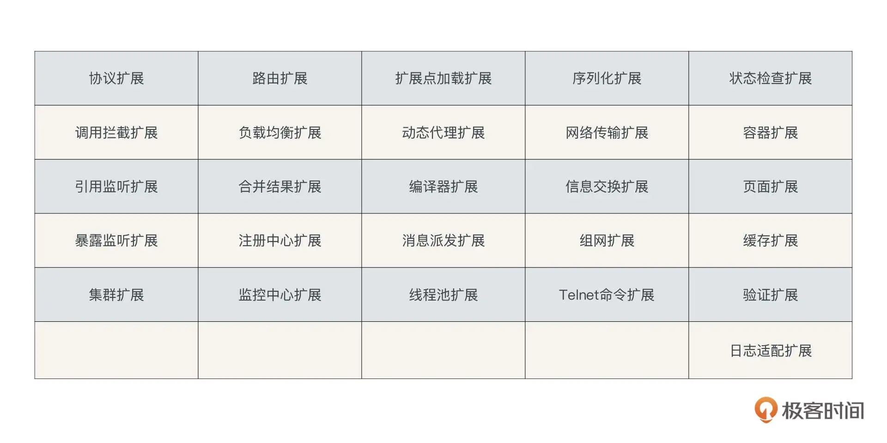
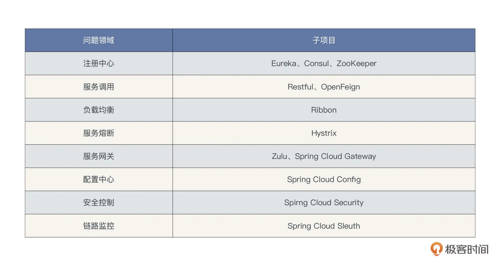
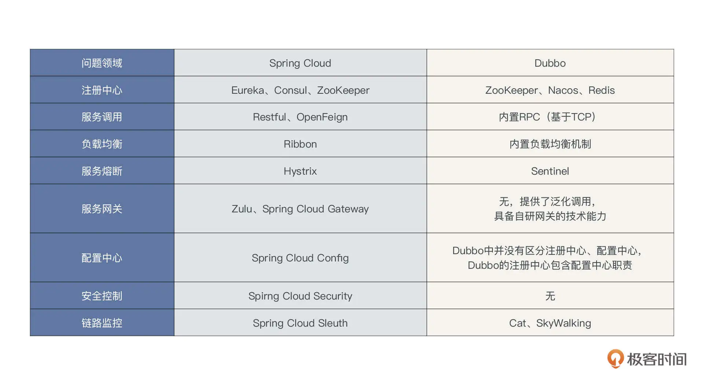
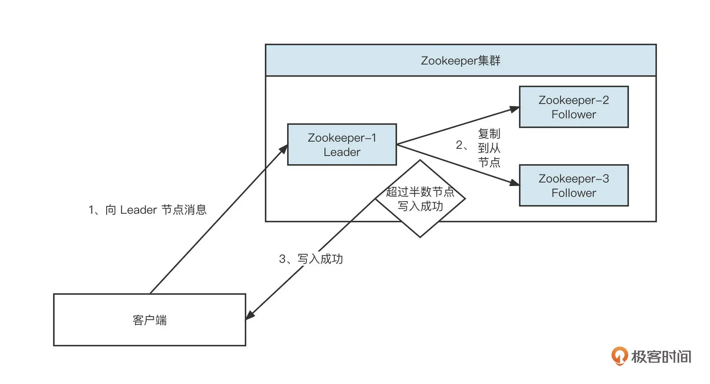
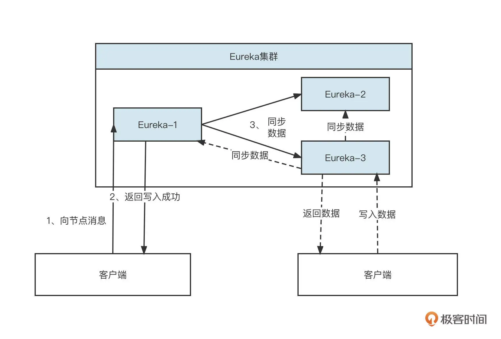
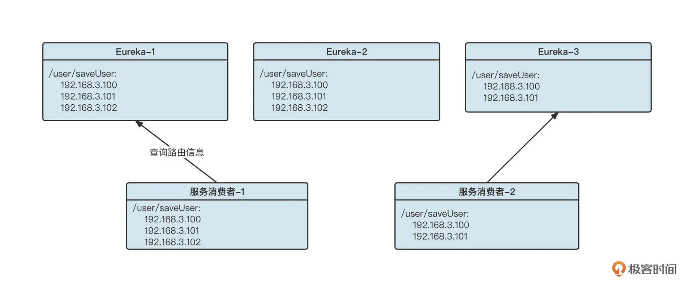

- 00 开篇词 为什么中间件对分布式架构体系来说这么重要？.md
- 01 中间件生态（上）：有哪些类型的中间件？.md
- 02 中间件生态（下）：同类型的中间件如何进行选型？.md
- 03 数组与链表：存储设计的基石有哪些？.md
- 04 红黑树：图解红黑树的构造过程与应用场景.md
- 05 多线程：多线程编程有哪些常见的设计模式？.md
- 06 锁：如何理解锁的同步阻塞队列与条件队列？.md
- 07 NIO：手撸一个简易的主从多Reactor线程模型.md
- 08 Netty：如何优雅地处理网络读写，制定网络通信协议？.md
- 08 加餐 中间件底层的通用设计理念.md
- 09 技术选型：如何选择微服务框架和注册中心？.md
- 10 设计原理：Dubbo核心设计原理剖析.md
- 11 案例：如何基于Dubbo进行网关设计？.md
- 12 案例：如何实现蓝绿发布？.md
- 13 技术选型：如何根据应用场景选择合适的消息中间件？.md
- 14 性能之道：RocketMQ与Kafka高性能设计对比.md
- 15 案例：消息中间件如何实现蓝绿？.md
- 16 案例：如何提升RocketMQ顺序消费性能？.md
- 17 运维：如何运维日均亿级的消息集群？.md
- 18 案例：如何排查RocketMQ消息发送超时故障？.md
- 19 案例：如何排查RocketMQ消息消费积压问题？.md
- 20 技术选型：分布式定时调度框架的功能和未来.md
- 21 设计理念：如何基于ZooKeeper设计准实时架构？.md
- 22 案例：使用分布式调度框架该考虑哪些问题？.md
- 23 案例：如何在生产环境进行全链路压测？.md
- 大咖助阵 高楼：我们应该如何学习中间件？.md
- 用户故事 学而时习之，不亦乐乎.md
- 用户故事 愿做技术的追梦人.md
- 用户故事 浪费时间也是为了珍惜时间.md
- 结束语 坚持不懈，越努力越幸运.md
09 技术选型：如何选择微服务框架和注册中心？
你好，我是丁威。
从这节课开始，我们正式进入微服务领域中间件的学习。我们会从微服务框架的诞生背景、服务注册中心的演变历程还有 Dubbo 微服务框架的实现原理出发，夯实基础。然后，我会结合自己在微服务领域的实践经验，详细介绍 Dubbo 网关的设计与落地方案，以及蓝绿发布的落地过程。
这节课，我们先从基础学起。
微服务框架的诞生背景
分布式架构体系是伴随着互联网的发展而发展的，它经历了单体应用和分布式应用两个阶段。记得我在 2010 年入职了一家经营传统行业的公司，公司主要负责政府采购和招投标系统的开发与维护工作，那是我第一次真正见识了庞大的单体应用架构的样子。
当时公司的架构体系是下面这个样子：

所有的业务组件、业务模块都耦合在一个工程里，最终部署的时候会打成一个统一的 War 包然后部署在一台 Web 容器中，所有的业务模块都访问同一个数据库。
在传统行业，这种架构的优势也很明显。因为部署结构单一，所以管理非常方便，而且一般情况下，政府采购等行为的流量变化不大，不会像互联网那样，随着平台的搭建造成业务体量的指数型增长。
我们设想一下，如果某一天国家发布政策，想要做一个全国的统一的政府采购平台，假设这家公司中标了，他们会怎么改造系统呢？通常的做法就是对系统进行拆分，单独部署和扩展各个子系统，拆分后的系统架构如下图所示：

由于单个子系统只部署一个节点已经无法满足要求了，所以他们需要部署多个进程，并且需要根据业务的体量进行动态的增加与减少，这样维护调用关系就会变得非常复杂而且容易出错。
在上面这张架构图中，基础资料子系统被其他所有模块调用，如果我们想要增加新的部署节点，或者由于一些机器老化需要更换设备，导致服务对应的 IP 地址发生变化，这时候应该怎么维护信息呢？
你可能会说这不就是负载均衡吗。我们可以通过 Nginx 来实现负载均衡，而调用方不需要维护调用者列表。它的架构是下面这样：

没错，通过引入 Nginx 可以实现负载均衡，并且在节点发生变化时，只需要修改 Nginx 的配置，不需要去修改调用方的代码。但是一旦部署了新的节点，我们还是需要手动在 Nginx 中添加路由信息，也就是说，这个操作只能是人工完成的。随着系统的膨胀，路由配置会变得越来越不可维护，容易出错甚至引发严重的故障。
这个问题代表着一系列与微服务相关的共性需求，如服务注册与自动发现机制、高性能 RPC 调用、服务治理等。
为了解决这些共性需求，很多微服务中间件如雨后春笋般涌现出来，其中要数 Dubbo 和 Spring Cloud 最为突出。
如何选择微服务框架？
Dubbo 和 Spring Cloud 是什么？怎么在 Dubbo 和 SpringCloud 之间进行选择呢？
Dubbo 是阿里巴巴开源的优秀的微服务框架，它开源之后迅速成为了互联网程序员们的首选微服务框架，我认为 Dubbo 有下面几个核心优势。
- 易用性
微服务框架通常包含服务注册与自动发现、高性能的 RPC 远程调用、服务治理等众多复杂的功能需求，框架内部非常复杂。但用户操作这种框架却非常简单，不需要太多专业知识，仅仅是通过 Dubbo 提供的 dubbo:service、dubbo:reference、dubbo:registry 等几个配置命令就可以轻松构建自己的微服务体系。
而且，这些配置命令拥有众多配置参数（涵盖服务发现、服务治理、性能调优等维度），而且都根据经验提供了默认值，用户几乎不需要对任何参数进行调优，就能保证项目的稳定运行。
- 可扩展性制
Dubbo 通过 SPI 提供了高度灵活的扩展机制，Dubbo 内部几乎所有的核心特性都提供了扩展点，Dubbo 官方文档中给出的 SPI 扩展点有下面这些：

- 高性能
Dubbo RPC 协议运行在传输层，并基于 TCP 协议实现了私有协议栈，支持多种序列化协议，包含 protocuf、kryo 等高性能序列化协议。
Dubbo 的易用性、可扩展机制和高性能让它在一段时间内备受拥护，但也许是 Dubbo 发展得已经非常成熟了，又或者是阿里巴巴在部署其他的战略，Dubbo 竟然“断更了”。我们知道持续迭代、持续创新是开源项目的生命源泉，停止更新的 Dubbo 也就无法继续高歌猛进了。这也给了其他微服务框架更多的生存空间，SpringCloud 技术栈就在这个时候崛起了。
Spring Cloud 技术栈由各个不同的子项目构成，每一个项目解决微服务架构领域的一个问题，我把 SpringCloud 和微服务架构相关的技术组件列了个表格：

SpringCloud 技术栈和 Dubbo 都是非常优秀的微服务框架，并且随着互联网分布式架构正式拥抱云原生，Dubbo 也顺应云原生发展浪潮，重新开始维护。那这两个框架我们该如何选择呢？
技术选项要考虑框架本身的特性，同时也需要结合公司的技术栈、使用的开发语言等因素综合考虑，这节课我们重点从框架本身这个维度来考量，也会顺便提一提如何结合公司自身的情况去进行选型。
从功能的丰富程度上讲，SpringCloud 体系更占优势，但并不是说使用 Dubbo 来构建微服务体系就无法实现链路监控、服务网关这些功能。Dubbo 的设计理念是职责分明，链路跟踪功能完全可以选择业界主流的链路跟踪开源项目，所以从功能维度我也给你列了一张表格，分别对比了用 Spring Cloud 和 Dubbo 搭建的微服务架构体系采用的技术栈：

从表格中我们也能看出，在微服务架构必备的注册中心、服务调用、负载均衡、熔断等基础功能上，Dubbo 都是内置的，不需要用户关注太多技术细节，而 Spring Cloud 需要单独进行学习，入门成本偏高。
Dubbo 的设计理念是提供对应的扩展点，供用户根据需要自行扩展。而 Spring Cloud 中各个技术组件都是单独发展的，最终 SpringBoot 体系将第三方的开源项目进行了整合，省去了用户的整合成本。
从性能的角度，Dubbo 要明显优于 SpringCloud。
Spring Cloud 的 RPC 调用是基于 HTTP 协议开发的，它处于网络模型的应用层，而 Dubbo 的 RPC 调用的底层是 TCP 协议，它处于网络模型的传输层。所以说，在底层网络通讯方面，Dubbo 就天然地占据了优势。
由于 Dubbo 是基于 TCP 编程的，这就比直接使用 HTTP 进行数据传输具有更大的灵活度。直接基于 TCP 网络进行编程，对网络通讯中各个环节可以灵活进行定制化开发，例如 Dubbo 在序列化、反序列化、IO 线程、业务线程等方面的设置具有高度配置化，性能的提升非常明显，而 Spring Cloud 在这方面显得就有些吃力了。阿里、腾讯、美团、拼多多等一线互联网企业的微服务框架都是基于 TCP 来构建的。
Dubbo、SpringCloud 都是主流的微服务，你可以根据实际情况加以选择。不过，结合目前我所处的行业和公司的技术栈，我倾向于采用 Dubbo 来构建微服务架构体系。
如何选择微服务注册中心？
在这节课的最后，我想结合生产中遇到的一个故障，和你聊聊注册中心的选型问题。
在微服务架构体系相当长的一段发展时间里，ZooKeeper 都占领着微服务注册中心的头把交椅，几乎成为注册中心唯一的选择。这是为什么呢？接下来我们就重点解读一下 ZooKeeper 的 CP 设计理念。下节课，我们还会对微服务注册中心的设计理念做详细介绍。
ZooKeeper 是一个分布式协调组件，符合 CAP 分布式理论中的 CP。
CAP 理论指的是，在一个分布式集群中存储同一份数据，无法同时实现 C（一致性）、A(可用性) 和 P(持久性)，只能同时满足其中两个。由于 P 在数据存储领域是必须要满足的，所以通常需要在 C 与 A 之间做权衡。ZooKeeper 是保住了一致性和持久性，选择性地牺牲了可用性。
ZooKeeper 的数据写入流程如下：

在 ZooKeeper 集群中，首先会进行 Leader 选举，根据 ZAB 协议选举出一个 Leader 节点用来处理写请求，然后将数据复制给从节点：
-
当集群内超过半数节点写入成功，则返回“数据写入成功”；
-
如果集群内还没有成功选举出 Leader，则 ZooKeeper 集群无法向外提供数据写入与读取服务。
在 Leader 选举期间，集群是不可用的（牺牲了可用性）。但在正常生产实践过程中，ZooKeeper 集群内部选举 Leader 节点的耗时在毫秒级别，并不会影响使用。然而，一旦遇到异常情况就很难说了。
我在生产过程中就出现了由于 ZooKeeper 集群内存溢出导致频繁 Full GC 的情况。当时的情况是，公司内部的 Dubbo 专用 ZooKeeper 地址被业务方用做分布式锁，但他们在使用过程中频繁创建节点，加上遇到 Bug，节点数据没有及时删除，这就导致占用的内存越来越大，最终频繁 Full GC，使得 ZooKeeper 会话超时，所有注册在 ZooKeeper 注册中心的服务全部被删除，所有客户端服务调用都出现“No Provider”警告，酿成一场严重的生产级故障。
经过这次故障，我也开始重新审视 ZooKeeper 和 CP 模式的合理性。注册中心是微服务体系的大脑，一旦出现问题会带来不可估量的损失，其可用性尤为重要。
也正是因为 CP 模型存在严重的可用性问题，以 AP 为设计思想的注册中心开始逐渐涌现出来。AP 的核心指导思想是容忍分布式集群中多个节点之间的数据短暂不一致，但最终能达到一致性。EureKa 就是典型的基于 AP 的注册中心。
由于基于 AP 的注册中心不需要保证强一致性，所以集群内节点的地位通常都是平等的。客户端在同一时间与集群中一个节点保持长连接，当出现错误后，客户端再从注册中心集群中选择另外一个节点，并且客户端可以向集群中任何一个节点写入数据后立即返回“写入成功”，然后让数据异步在集群内部复制，最终实现数据的一致性。EureKa 集群的写入流程如下：

由于集群内部节点的地位是平等的，客户端在其中一个节点不可用时，可以快速切换到另外的节点，这样可用性就得到了保障。那么问题来了，节点之间路由信息不一致会带来什么问题呢？这些问题我们可不可以接受？
在回答这个问题之前我们不妨来看看一个注册中心各个节点数据不一致的例子，如下所示：

在这里，由于某种异常，Eureka 集群中各个节点存储的数据并不一致，在节点 1 和 2 中关于 /user/saveUser 接口有三个服务提供者，但在节点 3 中只有两个服务提供者。但无论是三个服务提供者也好，还是两个服务提供者也好，都会造成负载不均衡，如果节点出现类似 Full GC 的问题，节点无法对外提供服务，这时候客户端会从集群中选择其他节点重试，并不会对系统带来致命影响。
**综合来看，服务注册中心这种场景，AP 模式显然比 CP 模式更佳。**这也是为什么现在很多原先使用 CP 模式的注册中心都开始尝试向 AP 转化，而像 Eureka、Nacos 这种注册中心基本都同时提供了 AP 和 CP 两种工作模式，用户可以按照场景进行选择。
总结
好了，这节课就讲到这里。这节课我们主要从微服务框架诞生背景、微服务框架选型和注册中心框架的演变三个方面介绍了微服务。
微服务框架的基本诉求主要包括：服务注册与自动发现机制、高性能 RPC 调用和服务治理，它致力于让分布式架构中的服务治理变得简单高效。
我们还分析了市面上两种最主流的微服务研发框架：Dubbo 和 Spring Cloud，Dubbo 具有易用性、灵活的扩展机制和更好的性能，Spring Cloud 则具有更加丰富的功能。你可以根据实际情况加以选择，结合目前我所处的行业，公司的技术栈，我倾向于采用 Dubbo 来构建微服务架构体系。
最后，我还结合自己在实践过程中发生的一起故障，介绍了注册中心从 CP 向 AP 架构演进的原因。总的来说，以 Eureka 和 Nacos 为代表的注册中心，正在逐渐取代采用 CP 模式的 ZooKeeper，成为注册中心的优先选项。
思考题
最后，我也给你留一道思考题。
我们刚才讲了一个我在生产实践中经历的一次事故。基于 Zookeeper 搭建的 Dubbo 服务注册中心，由于 ZooKeeper 节点的内存使用不当导致频繁触发 Full GC，最终导致 ZooKeeper 会话超时，在注册中心的服务提供者会全部被删除，所有的消费者调用都感知不到服务提供者，进而导致服务调用雪崩。这时候我们应该怎么做呢？难道要重启所有服务提供者，让他们重新注册吗？你有什么快速恢复的方法？
欢迎你在评论区留下自己的看法，我们下节课见！
© 2019 - 2023 Liangliang Lee. Powered by Vert.x and hexo-theme-book.